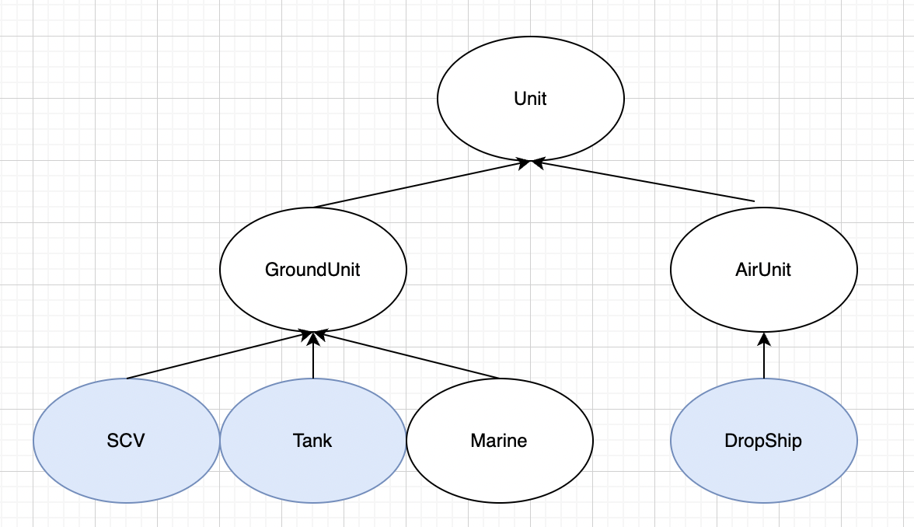

<meta charset="utf-8">
<html lang="ko">
<head>
    <link rel="stylesheet" type="text/css" href="./../style.css" />
    <title>Java의 인터페이스</title>
</head>
<body id="tt-body-page" class="">
<div id="wrap" class="wrap-right">
    <div id="container">
        <main class="main ">
            <div class="area-main">
                <div class="area-view">
                    <div class="article-header">
                        <div class="inner-article-header">
                            <div class="box-meta">
                                <h2 class="title-article">Java의 인터페이스</h2>
                                <div class="box-info">
                                    <p class="category">노트</p>
                                    <p class="date">2022-06-06 15:30:45</p>
                                </div>
                            </div>
                        </div>
                    </div>
                    <hr>
                    <div class="article-view">
                        <div class="contents_style">
                            <h2 data-ke-size="size26"><b>인터페이스 타입의 매개변수</b>&nbsp;</h2>
<p data-ke-size="size16">메서드 호출 시 해당 인터페이스를 구현한 클래스의 인스턴스를 매개변수로 받겠다.&nbsp;</p>
<pre id="code_1654494872386" class="cpp" data-ke-language="java" data-ke-type="codeblock"><code>	void attack(Fightable f) 
	{	
	}</code></pre>
<p data-ke-size="size16">Fightable이 인터페이스라면, attack 메소드는 Fightable 인터페이스를 구현한, 즉 implements Fightable 인 클래스만 매개변수로 받을수 있다.&nbsp;</p>
<p data-ke-size="size16">&nbsp;</p>
<p data-ke-size="size16">&nbsp;</p>
<h2 data-ke-size="size26"><b>인터페이스는 관계 없는 클래스들에 관계를 맺어준다</b></h2>
<p data-ke-size="size16">인터페이스는 관계 없는 클래스들에 관계를 맺어 주는데도 사용된다.&nbsp;</p>
<p data-ke-size="size16">다음과 같은 상속관계가 있다고 생각해 보자.&nbsp;</p>
<p><figure class="imageblock alignCenter" width="690" height="398" >
    <span data-lightbox="lightbox">
        
    </span>
    <figcaption></figcaption>
</figure></p>
<p data-ke-size="size16">&nbsp;</p>
<p data-ke-size="size16">SCV에게 기계 유닛, 즉 탱크와 드롭쉽을 수리할수 있는 <b>repair 메소드를 추가</b>하고 싶다.</p>
<p data-ke-size="size16">하지만 탱크의 조상은 GroundUnit이고 드롭쉽의 조상은 AirUnit이다.&nbsp;</p>
<p data-ke-size="size16">&nbsp;</p>
<p data-ke-size="size16"><b>첫 번째</b> 방법은 SCV 클래스에 각 유닛을 매개변수로 받는 repair 메소드를 여러개 추가하는 것이다.&nbsp;</p>
<p data-ke-size="size16">이 방법은 코드도 길어지고, 새로운 수리 가능한 유닛이 추가 될때 마다 메소드를 추가해줘야 한다.&nbsp;</p>
<p data-ke-size="size16">&nbsp;</p>
<p data-ke-size="size16"><b>두 번째</b> 방법은 Tank의 조상인 GroundUnit, DropShip의 조상인 AirUnit을 매개변수로 받는 repair 메소드를 각각 추가하는 것이다.</p>
<p data-ke-size="size16">이 방법도 첫 번째 방법과 같은 단점을 지닌다. 새로운 종류의 Unit이 추가되면 메소드를 추가해야하고,&nbsp;</p>
<p data-ke-size="size16">또한 GroundUnit의 자손인 Marine은 repair가 불가능한데 이 경우 GroundUnit은 모두 repair 메소드에 접근이 가능하기 때문에 오류이다.&nbsp;</p>
<p data-ke-size="size16">&nbsp;</p>
<p data-ke-size="size16"><b>세 번째</b> 방법이 인터페이스를 구현하는 것이다.&nbsp;</p>
<p data-ke-size="size16">몸체가 빈 Repairable 인터페이스를 구현해서 수리가 가능한 Tank와 DropShip 클래스가 implement 하도록 하면, 관계 없던 두 클래스가 Repairable이라는 공통점을 갖는다.&nbsp;</p>
<p data-ke-size="size16">&nbsp;</p>
<p data-ke-size="size16">물론 repair 함수가 Unit 객체를 받도록 하는 방법도 있다.</p>
<p data-ke-size="size16">하지만 이경우 두번째 방법의 단점과 마찬가지로 repair에 접근해서는 안되는 객체들도 접근이 가능해진다.&nbsp;</p>
<p data-ke-size="size16">&nbsp;</p>
<pre id="code_1654496998577" class="java" data-ke-language="java" data-ke-type="codeblock"><code>package main;

public class RepairableTest 
{
	public static void main(String[] args) 
	{
		Tank tank = new Tank();
		DropShip dropship = new DropShip();
		
		Marine marine = new Marine();
		SCV scv = new SCV();
		
		scv.repair(tank);
		scv.repair(dropship);
//		scv.repair(marine);
		
	}
	
}


interface Repairable {}  // 빈 인터페이스 : 클래스간 관계를 맺어줄수 있다 

class Unit 
{
	int hp;
	final int MAX_HP;
	Unit(int hp)
	{
		MAX_HP = this.hp;
	}
}
//////
class GroundUnit extends Unit 
{
	GroundUnit(int hp) { super(hp); }
}

class AirUnit extends Unit 
{
	AirUnit(int hp) { super(hp); }				
}
///// 
class DropShip extends AirUnit implements Repairable 
{
	DropShip() { super(80); hp = MAX_HP;} 
	public String toString() { return "DropShip"; } 
}

class Marine extends GroundUnit 
{
	Marine() { super(50); hp = MAX_HP;}
}

class Tank extends GroundUnit implements Repairable 
{
	Tank() { super(100); hp = MAX_HP;} 
	public String toString() { return "Tank"; } 
}

class SCV extends GroundUnit implements Repairable 
{
	SCV() { super(30); hp = MAX_HP; }
	
	void repair(Repairable r) 
	{
		if(r instanceof Repairable) 
		{
			Unit u = (Unit)r;
			while(u.hp != u.MAX_HP) u.hp++;
			System.out.println(u.toString() + "의 수리 완료"); 
		}			
	}	
	
//	void repair(Unit u) 
//	{
//		if(u instanceof Unit) 
//		{
//			while(u.hp != u.MAX_HP) u.hp++;
//			System.out.println(u.toString() + "의 수리 완료"); 
//		}			
//	}
	
}</code></pre>
<p data-ke-size="size16">&nbsp;</p>
<p data-ke-size="size16">&nbsp;</p>
<h2 data-ke-size="size26"><b>인터페이스는 직접적인 두 클래스의 관계를 간접적인 관계로 바꿀수 있다</b></h2>
<p data-ke-size="size16">다음과 같은 두 클래스 A와 B가 있다.</p>
<pre id="code_1654498627394" class="java" data-ke-language="java" data-ke-type="codeblock"><code>class A 
{
	public void methodA(B b) 
	{
		b.methodB();
	}
}

class B 
{
	public void methodB() 
	{
		System.out.println("methodB()");
	}
}</code></pre>
<p data-ke-size="size16">A는 B의 인스턴스를 받아 메소드를 호출한다.&nbsp;</p>
<p data-ke-size="size16">B의 methodB()의 선언부가 변경되면 methodB를 호출하는 클래스 A도 변경되어야 한다.&nbsp;</p>
<p data-ke-size="size16"><b>이렇게 A(User)와 B(Provider)는 직접적인 관계에 있다.</b></p>
<p data-ke-size="size16">&nbsp;</p>
<p data-ke-size="size16">이런 직접적인 관계는 한쪽(Provider)이 변경되면 다른 쪽(User)도 영향을 받는다.&nbsp;</p>
<p data-ke-size="size16">이런 관계를 해소하고 <b>두 클래스를 간접적인 관계로 바꾸는데 인터페이스를 사용할수 있다.</b></p>
<p data-ke-size="size16">&nbsp;</p>
<pre id="code_1654499002226" class="java" data-ke-language="java" data-ke-type="codeblock"><code>import java.util.*;

public class Main {	
	public static void main(String[] args)
	{	
		A a = new A();
		a.methodA(new B());
	}
}

interface I 
{
	void methodB();
}

class A 
{
	public void methodA(I i) // 인터페이스 I를 구현하는 클래스를 받는다 
	{
		i.methodB(); 
	}
}

class B implements I 
{
	public void methodB() 
	{
		System.out.println("methodB()");
	}
}</code></pre>
<p data-ke-size="size16">&nbsp;</p>
<p data-ke-size="size16">인터페이스 I를 정의하고 B가 I를 구현하도록 한다.</p>
<p data-ke-size="size16">그리고 클래스 A의 methodA가 인터페이스 I를 받도록 한다.</p>
<p data-ke-size="size16">이렇게 하면 A와 B의 직접적인 관계는 끊기고<b> A - I - B</b> 의 관계가 성립한다</p>
<p data-ke-size="size16">따라서 B가 변경되더라고 A에 직접적인 영향은 주지 않게된다.&nbsp;</p>
<p data-ke-size="size16">또한 A는 B의 존재여부나 이름도 몰라도 전혀 상관이 없다.&nbsp;</p>
<p data-ke-size="size16">&nbsp;</p>
<p data-ke-size="size16">&nbsp;</p>
<p data-ke-size="size16">&nbsp;</p>
<p data-ke-size="size16"><i>출처: java의 정석 (남궁성)&nbsp;&nbsp;</i></p>
<p data-ke-size="size16">&nbsp;</p>
                        </div>
                        <br/>
                        <div class="tags">
                            #Java 
                        </div>
                    </div>
                </div>
            </div>
        </main>
    </div>
</div>
</body>
</html>
